答える側
「聞いてもらえた」
と感じる。
答えるたびに、
自分の言葉
に反応が
返ってくる。
だから、本音が出る。
対話型AIアンケート Smash VOC
今のアンケートと置き換えるだけ。
「集計して終わり」から、
「次の一手がわかる」へ。
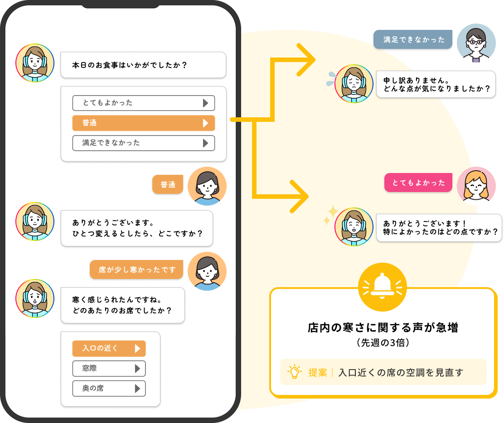
クレジットカード登録不要
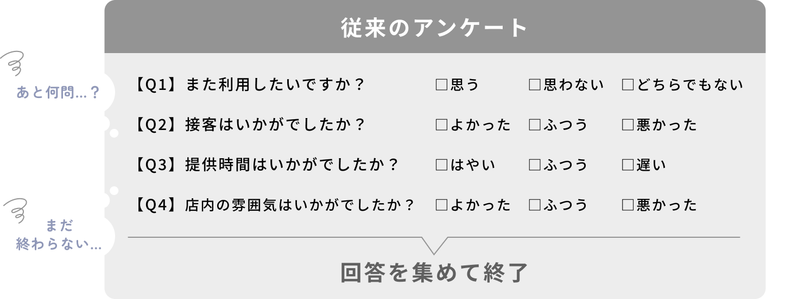
顧客の本音より「早く終わらせる」
ための回答が集まる
選択肢以上の「なぜ？」がわからない
何をどう改善すべきかわからないまま、
数字だけが報告される
だから、アンケートの形を変えました。
AIが回答に合わせて、その場で聞き返します。
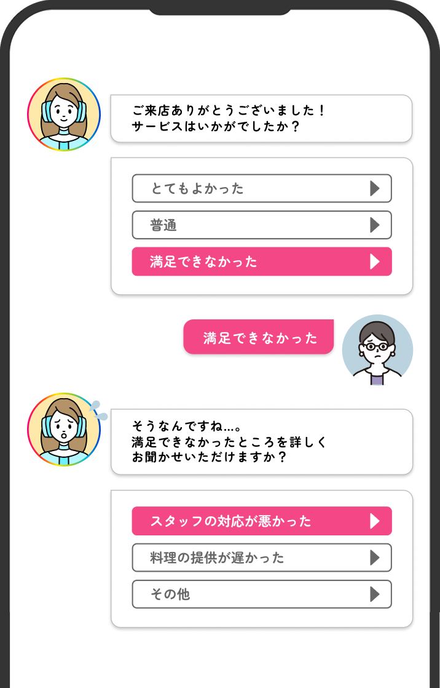
「聞いてもらえた」
と感じる。
答えるたびに、
自分の言葉
に反応が
返ってくる。
だから、本音が出る。
「なぜ」
までわかる。
「普通」「不満」の
理由まで
その場で
深掘りするから
改善策が見えてくる。
簡易デモ
お店のGoogleマップURLを入れるだけで、
あなたのお店向けのアンケートが
その場でできあがります。
体験のポイント
※製品版では、GoogleマップのURLがなくても、
AIとの会話でアンケートが作れます。
What Smash VOC Can Do
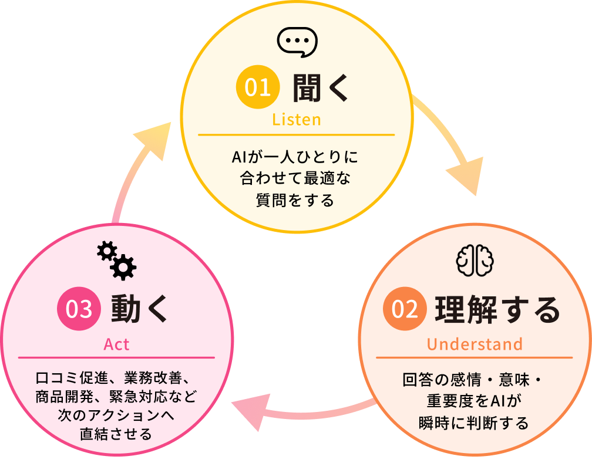
プロのインタビュアーのように、
一人ひとりに違う質問を。
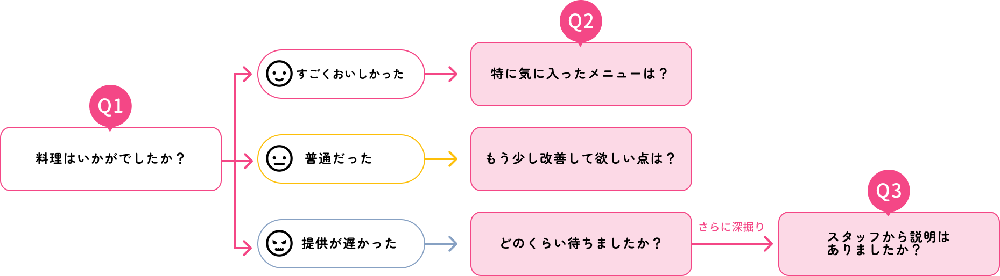
言葉の裏にある本音まで
AIが読み取る。
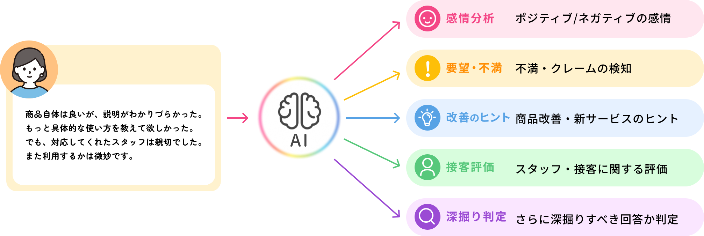
※内容はプランによって異なります。
集めた声が、そのまま
次の行動に変わる。
Googleマップの
口コミ投稿へご案内
責任者に優先表示し、
追加で詳しくヒアリング
改善・開発向けの声
として自動で分類
すぐにお知らせ
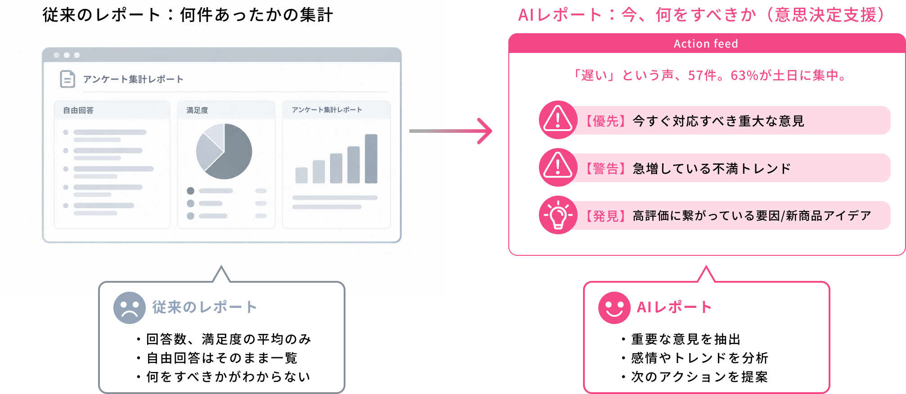
※内容はプランによって異なります。
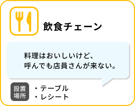
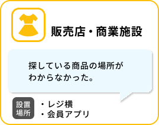
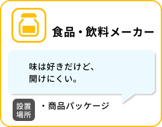
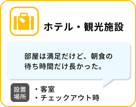
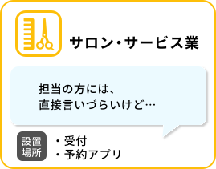
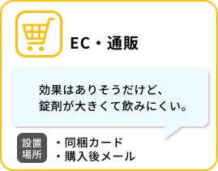
カンタン設定
設定の目安は30分程度
業種や聞きたいこと、口調などをチャットで答えるだけ。GoogleマップのURLがあれば、お店の情報と口コミをもとにAIが組み立てます。
AIがたたき台を作成。質問はあとから自由に調整できます。
テーブル、パッケージ、メールなどに。今アンケートを案内している場所があれば、QRやリンクを差し替えるだけ。その日から声が集まり始めます。
集まった声と、次の一手がわかるレポートは、管理画面から確認できます。回答を終えたお客様には、Googleマップへの口コミ投稿もご案内します。
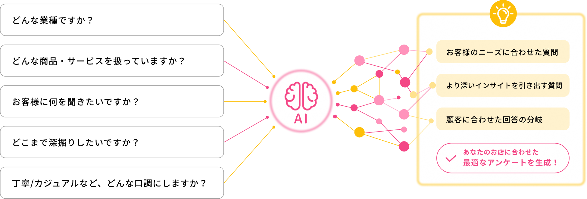
プランの違いは、使えるQRの数だけ。
シナリオ数・メンバー数は無制限です。
FAQ